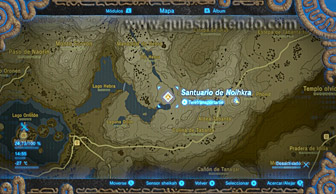
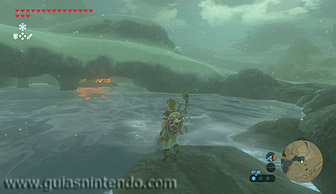
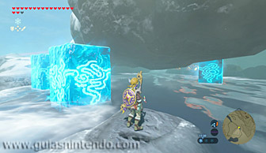
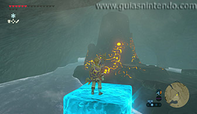
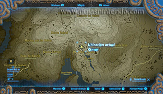
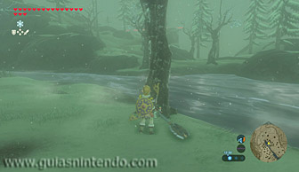
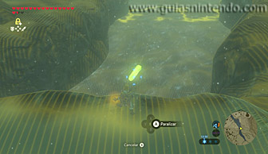
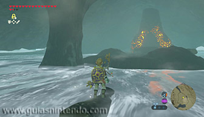
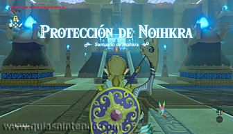
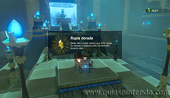

Se encuentra en la región de la torre de Hebra, al oeste de dicha torre y al este del lago Hebra.

Si examinas la zona norte de la parte del lago Hebra que queda más al este verás una especie de cueva en la que podrás localizar este santuario. El problema es que las aguas del lago están heladas, por lo que para llegar ahí sin sufrir demasiados daños deberás utilizar el módulo Témpano para acercarte al máximo y luego nadar el menor tiempo que puedas para padecer el menor daño posible (no hay vestimenta ni elixir que te impida sufrir daños por agua helada).
Puesto que la corriente del agua fluye de norte a sur, lo mejor es tratar de acceder a la cueva por su lado nordeste. De esa manera, irás más rápido cuando te toque nadar.

Una manera mucho más compleja pero más segura de alcanzar el santuario es cortar un árbol de los que hay en el manantial de Hebra ubicado al nordeste del lago Hebra. Si el tronco cae al agua luego bajará por una cascada que lleva al río Hylia.

Si después usas el módulo Paralizador para detener el tronco y te subes en él, podrás bajar por el río hasta llegar a la cueva del santuario (junto al santuario habrá dos troncos que luego podrás empujar hacia el agua para subir en ellos y usarlos para salir de la cueva).

Una vez dentro del santuario, abre el cofre que contiene una rupia dorada y después alcanza el altar para conseguir el símbolo de valía.
